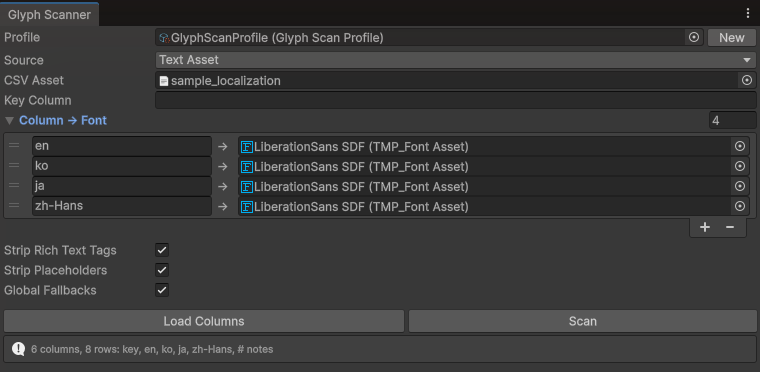
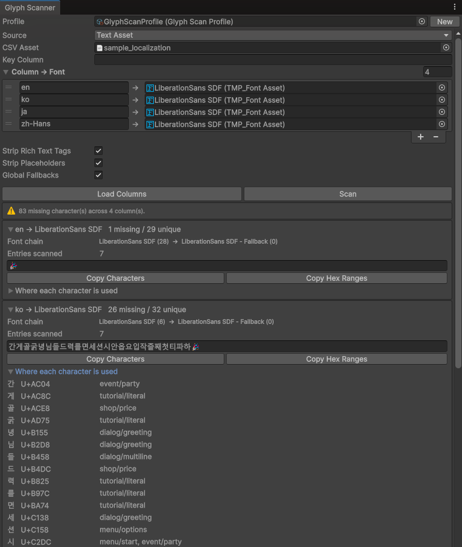

When a game is localized into Japanese, Chinese, Korean or other languages, some characters in the translations are often missing from the TextMeshPro font asset that renders them. Players then see an empty box (□) instead of the character.
LocaSync Glyph Scanner reads your localization table and checks every character of every language column against the TMP font asset you assign to that language, including its whole fallback chain. It lists only the characters that none of those fonts contain, so you can add them to your font atlas before release.
com.unity.textmeshpro package on Unity 2022.3, or com.unity.ugui 2.0+ on Unity 6. If TextMeshPro is not installed, the tool shows a notice that says what to install instead of causing compile errors.Assets/LocaSync Glyph Scanner/.This walkthrough uses the included sample, so you can try the tool before pointing it at your own data.
Samples/Sample CSV/sample_localization.csv into CSV Asset.+ en, + ko, + ja, + zh-Hans).LiberationSans SDF for every row.
LiberationSans has no Korean, Japanese or Chinese glyphs, so the scan reports those characters as missing. The English column reports only the emoji.
| Source | Use it for |
|---|---|
| Text Asset | A .csv file inside your project. |
| File Path | Any .csv or .tsv file, absolute or relative to the project folder, for example an export from Unity Localization or I2 Localization. Use Browse to pick it. |
| Sheet URL | A Google Sheets link, or any URL that returns CSV/TSV. No API key or OAuth setup is needed. |
…/edit#gid=…) into Sheet URL. The tab in the link (gid) is the one scanned.# are skipped (useful for notes and drafts).ko or Korean(ko). Columns whose header starts with # or _ are not offered as language columns."") and line breaks.
Each language row shows:
| Option | Effect |
|---|---|
| Strip Rich Text Tags | Ignores TextMeshPro tags such as <b>, <color=#FF0000>, <sprite=1> and <link="id">. Text inside <noparse> is still checked. Text that only looks like a tag (a < b) is checked as written. |
| Strip Placeholders | Ignores simple placeholders such as {0}, {name} and {0:N2}. Plural and select forms like {0:plural:item|items} are checked, because their words are rendered. |
| Global Fallbacks | Also searches the fallback fonts and default font set in TMP Settings, as TextMeshPro does at runtime. |
| Message or symptom | What to do |
|---|---|
| "LocaSync Glyph Scanner needs TextMeshPro…" | Install TextMeshPro (Unity 2022.3) or Unity UI 2.0+ (Unity 6) from the Package Manager. |
| "Google Sheets returned HTTP 401/403/404…" or "Google returned a web page…" | The sheet is private, missing, or the link is incomplete. Share it as Anyone with the link or publish it to the web (section 5.1). |
| "Download failed… Check your internet connection" | The URL could not be reached. Check the connection, proxy and URL. |
| "Could not read the file (is it open in Excel?)" | Close the file in Excel or other programs that lock it, then scan again. |
| "Column '…' not found" | The binding's column name does not match a header. Click Load Columns to see the exact headers. |
| A character is reported missing but renders in the game | Check whether a Dynamic font in the chain adds it at runtime (section 7), or whether the text object uses a different font than the one bound in the profile. |
No scripting is needed to use the tool. For automation (for example a CI check), the core types are public in the LocaSync.Editor.GlyphScanner namespace (assembly LocaSync.GlyphScanner.Editor):
| Type | Purpose |
|---|---|
DelimitedTextParser | DetectDelimiter(text) and Parse(text, delimiter) for CSV/TSV. |
TextTable | FromRows(rows) builds a header plus rows; IndexOf(header) finds a column. |
GlyphCoverageScanner | Scan(entries, chain, options) returns a CoverageResult with the missing code points and the keys that use them. |
IGlyphLookup | One font in a chain (Contains(codepoint), IsDynamic). |
CharacterSetFormatter | ToCharacters and ToHexRanges for the Font Asset Creator. |
SheetUrlNormalizer | Turns Google Sheets share or publish links into direct CSV download URLs. |
GlyphScanProfile | The ScriptableObject that stores a scan setup. |
https://github.com/lsg000/locasync-glyph-scanner/issuesDocumentation/CHANGELOG.md.